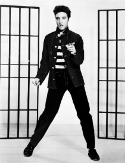
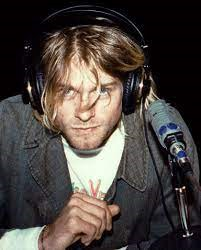

ROCK

O QUE É?

O rock 'n' roll é um gênero musical que teve origem nos Estados Unidos (EUA) a partir dos anos 1950, popularizando-se por todo o mundo. Mais do que um estilo musical com ritmo contagiante, é conhecido por ter um apelo comportamental e visual cheio de irreverência e atitude.
Geralmente, as bandas de rock são formadas por um vocalista, um baixista, um baterista e um ou dois guitarristas. Alguns grupos podem usar teclado ou percussão, dependendo do estilo, mas a guitarra elétrica é, desde os primórdios, a marca registrada.
Guitarrista tocando guitarra (obviamente)
COMO SURGIU?
A história do rock começou com uma mescla de elementos do pop e do rockabilly, com pitadas de country e rhythm & blues. Os norte-americanos Jerry Lee Lewis, Johnny Cash, Bill Haley e Chuck Berry, conhecido como o “pai do rock”, foram alguns dos precursores.
Porém, o estilo musical tornou-se mais popular por meio das apresentações de Elvis Presley, considerado por muitos o “rei do rock”. O cantor prezava não só pela imagem como pelos passos de dança, vistos como inovadores à época.
Na década de 1950, o cinema ajudou a propagar o rock, inclusive com Elvis, e em filmes como O selvagem e Juventude transviada, que mostravam personagens rebeldes usando jeans, jaquetas de couro, botas e outros adereços que se tornaram elementos característicos desse estilo.
Foi nessa que nasceu a guitarra elétrica, instrumento que se tornou um dos símbolos do rock. Os guitarristas costumavam tocar riffs (progressão de acordes) nos shows, momento durante o qual são aclamados pelo público até hoje.
Foto de Elvis Presley
EXEMPLOS DE ARTISTAS
- Elvis Presley 
- John Lennon
-
Freddie Mercury

- Kurt Cobain 
- Flea
VÍDEO EXPLICATIVO
Gostou desse estilo musical? Que tal agora ouvir um pouco das melhores músicas desse gênero. É só clicar no vídeo: